Drawing · 3D modeling · Spatial design
Foundations
First-year studio work: drawing, color, assemblage and space
Context
Before HCI, I spent two years in Industrial Design. These projects are where I learned to see, draw and model, and they still shape how I approach screens.
Projects
Colourful Chess Set for Children
AD 112, Project 1. Research suggested that bold, saturated color helps children engage and that visually distinct characters help them remember stories. So I gave each piece type its own color with a rationale (purple for the king, magenta for the queen), kept team identity in black and white tops, and designed a bold board with coordinates and a storage chest.
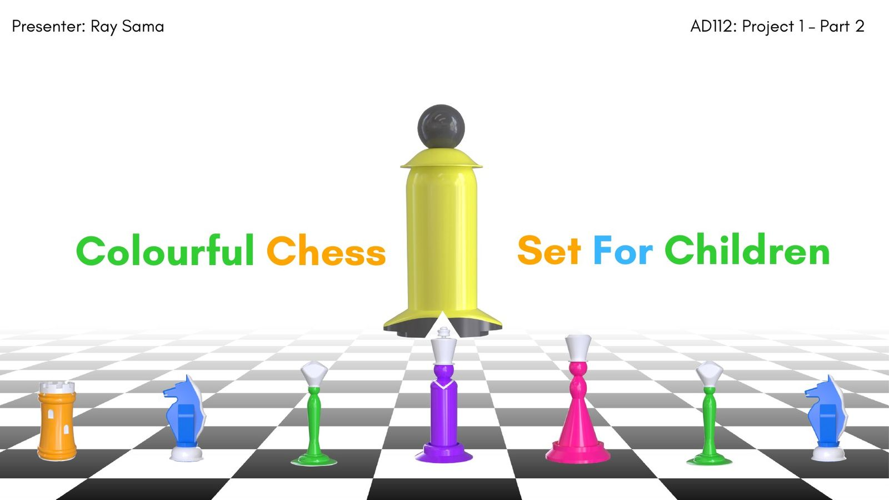
Colourful Chess Set for Children 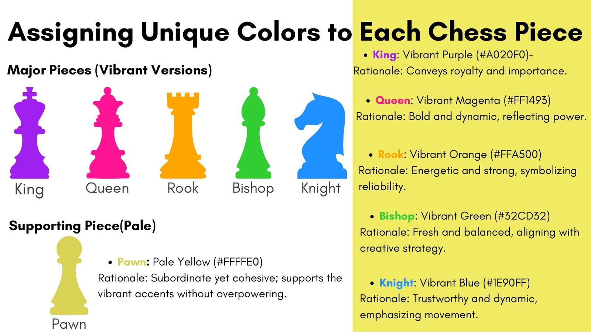
Assigning a unique color to each piece 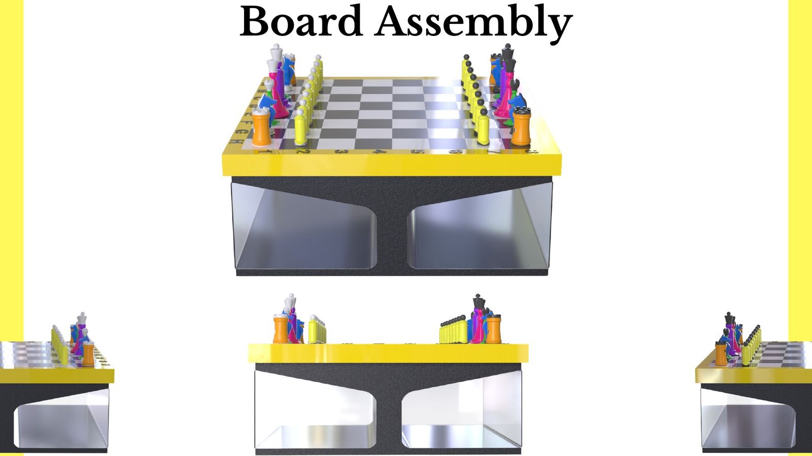
Board assembly with storage Assemblage: from a wristwatch to an airport lounge
AD 112, Project 2. I disassembled a wristwatch into seven parts, documented each in technical drawings, and then reassembled those parts at furniture scale into an airport lounge set: the Airchaisse lounge chair, the Timetable side table and the Playover play mat for kids. Research on comfortable seating set the 95–105° seat-to-back angle.
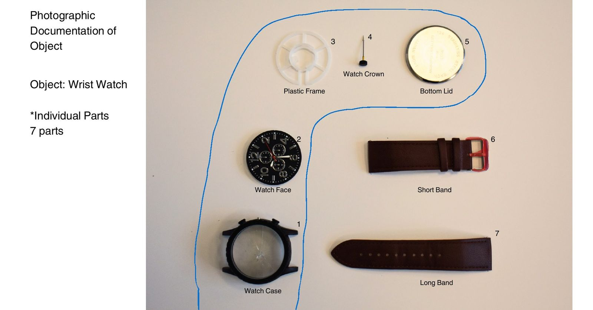
The watch, taken apart 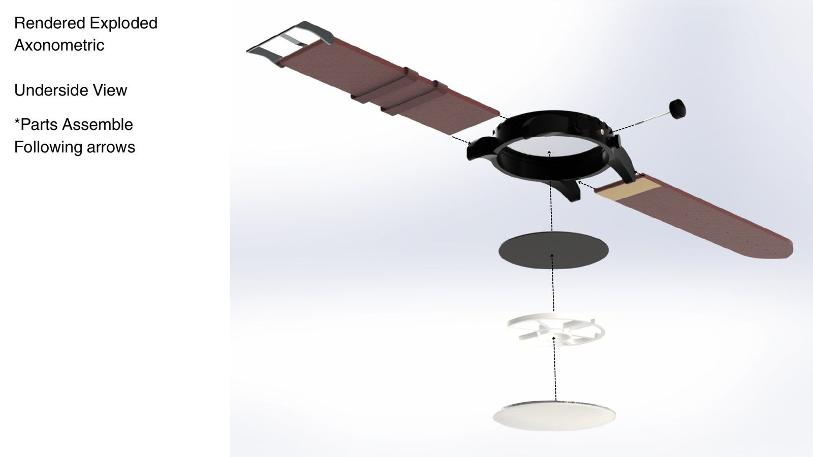
Rendered exploded axonometric 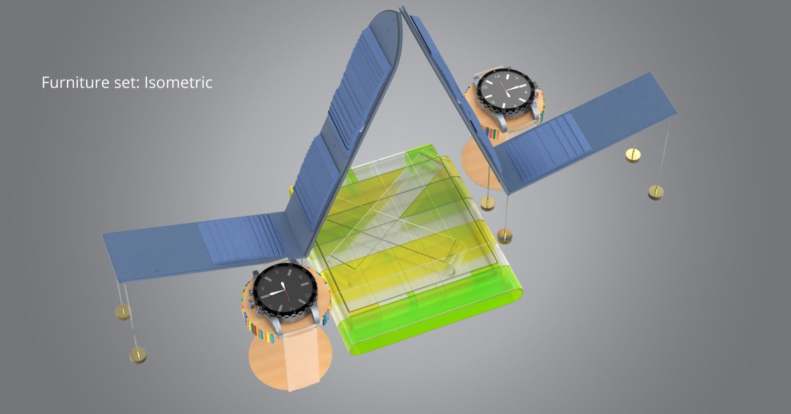
Furniture set 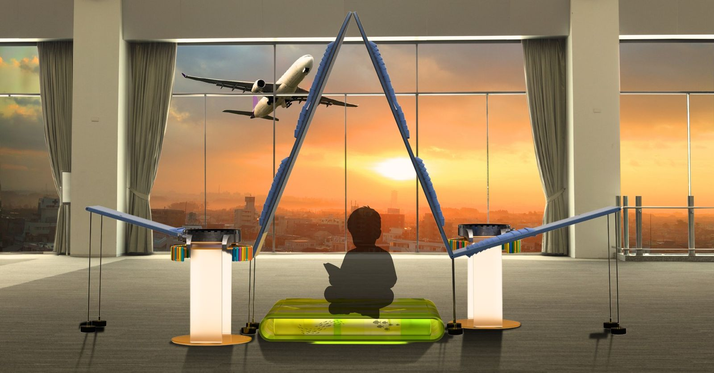
The set in an airport lounge P.Shell: a healing environment
AD 112, Project 3, an homage to Kazuo Kawasaki’s life-centered design. Three nested, color-coded domes move people from staff entry (blue) to healing (green) to guest interaction (yellow), a narrative of recovery. Zen sand-garden ripples on the walls draw on research linking rounded, organic forms to lower anxiety.
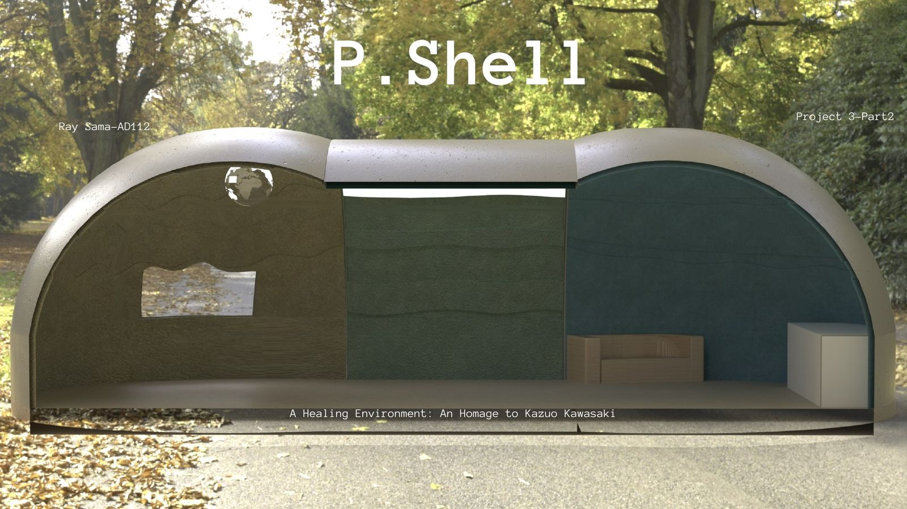
P.Shell 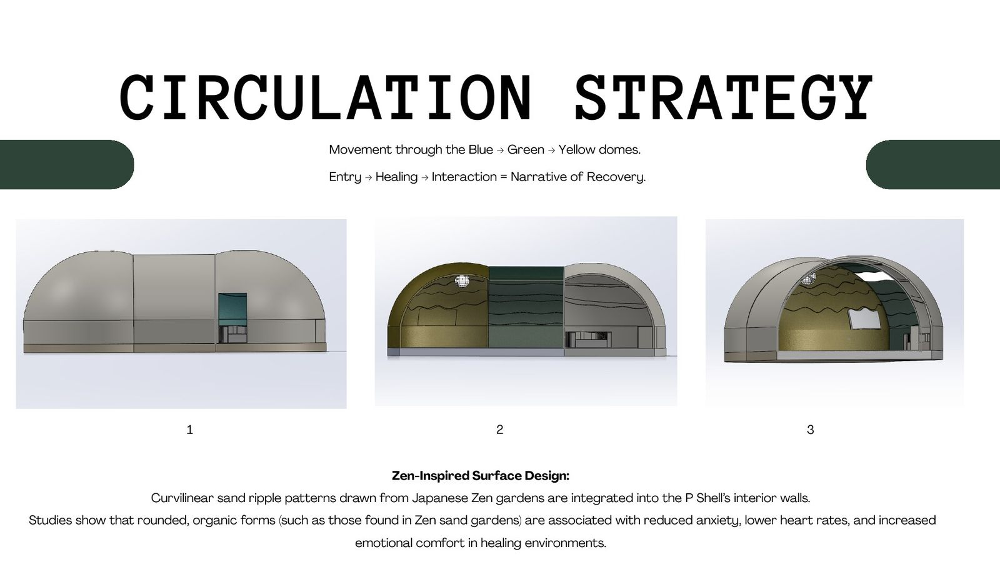
Circulation strategy 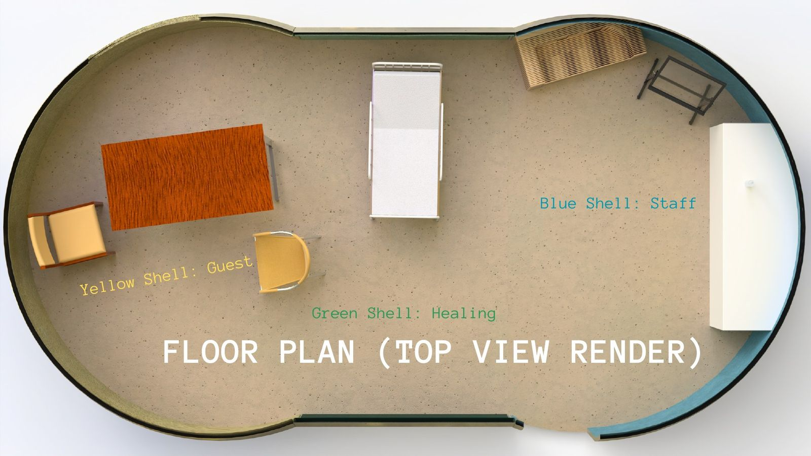
Floor plan 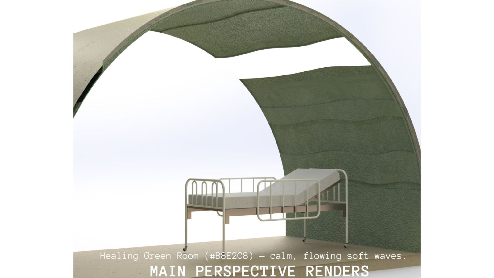
Healing green room Design Process Folder
AD 111. Lines, contours, wireframe volumes, still life, orthographic and axonometric projection, and one- and two-point perspective.
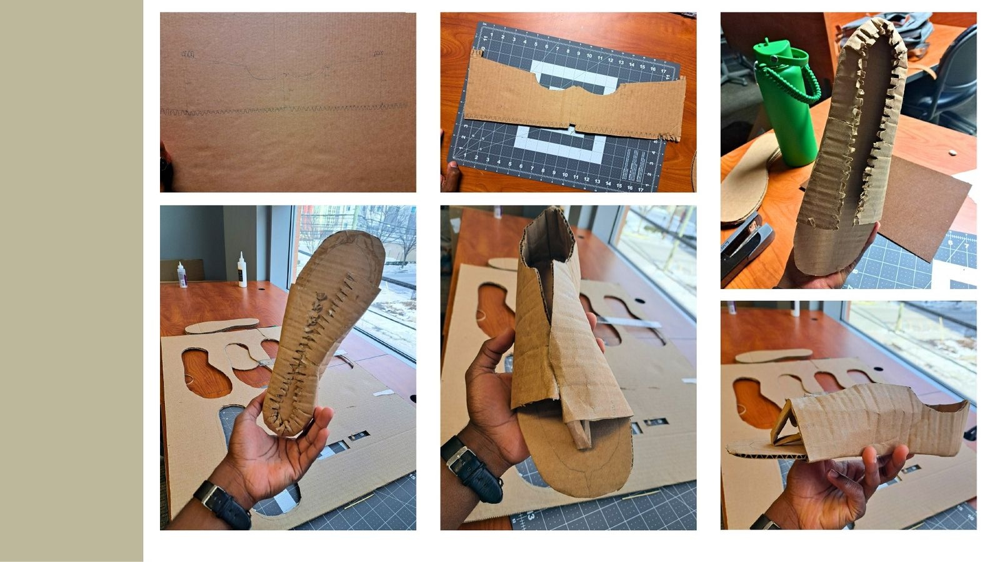
Shoe models 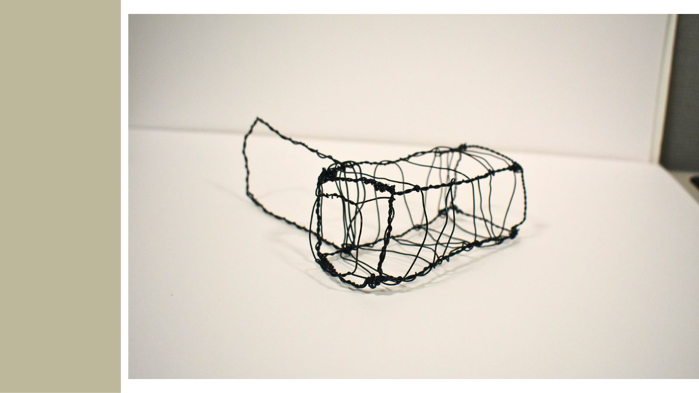
Wire volume study 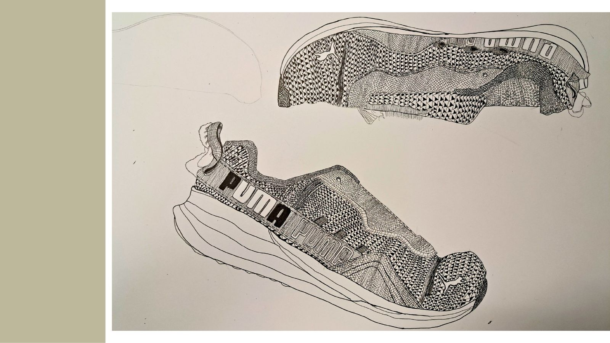
Orthographic shoe study 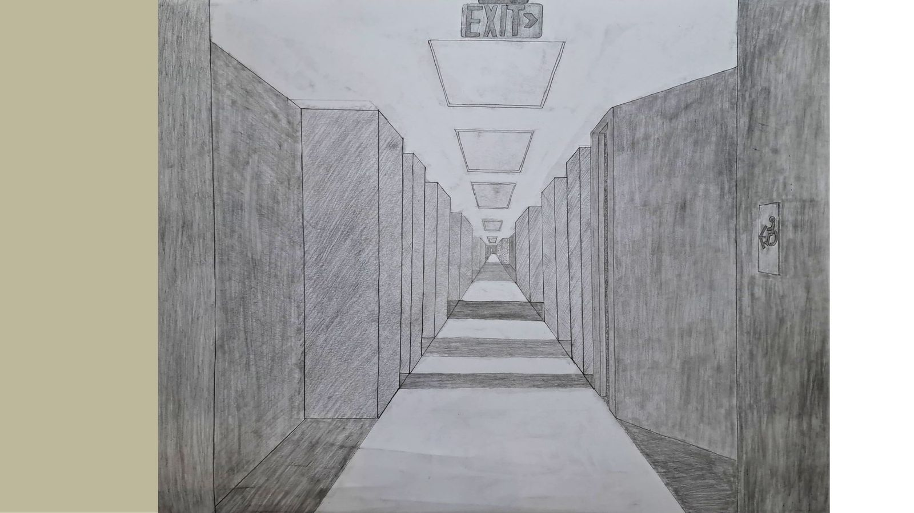
One-point perspective